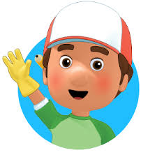

Holaa hoy vamos de Manny Herramientas, el es Manny y habla con sus herramientas, unos muy buenos muñecos que no volvieron a presentar
Manny Manitas - Serie 2006 - SensaCine.com Manny nació en Sheet Rock Hills y es el mejor reparador de la ciudad que con la ayuda de de sus herramientas Turner, Pat, Rusty, Stretch, Squeeze, Dusty, Philip y Flicker repararán y montarán todo lo que les pida los habitantes de Sheet Rock Hills.
